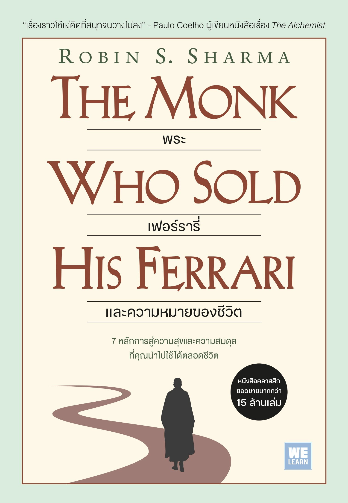
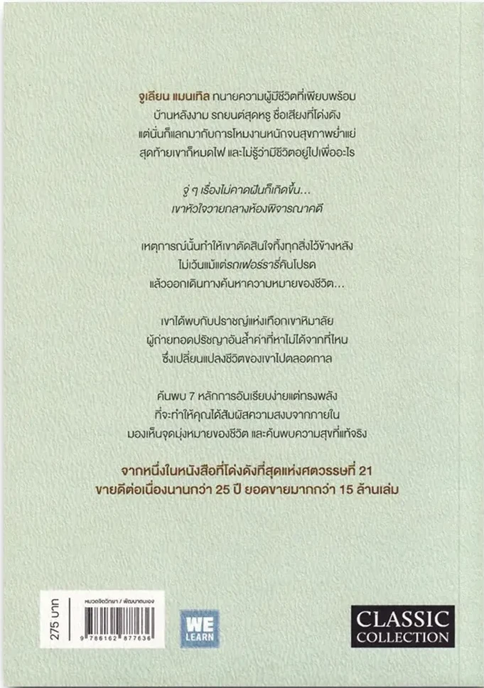

หยุดพักด้วย Ritual of Solitude
แบ่งเวลา 10–15 นาทีต่อวันอยู่กับตัวเองเงียบ ๆ ให้ใจได้พักจากงานและหน้าจอ แล้วจดบันทึกสิ่งที่รู้สึกไว้
แนะนำหนังสือ The Monk Who Sold His Ferrari
By Robin S. Sharma

สรุปเรื่องที่หลายคนอยากรู้ ตั้งแต่เนื้อหาไปจนถึงสิ่งที่สามารถนำกลับไปใช้ในชีวิตประจำวันได้
Julian Mantle ทนายความระดับท็อปผู้มั่งคั่งด้านการเงิน เขามีครบทุกอย่างในชีวิตรวมถึง “รถเฟอร์รารี่สีแดง” แต่ชีวิตเขากลับเต็มไปด้วยความเครียด ไร้ความสุข จนกระทั่งหัวใจวายกลางศาล
เหตุการณ์นี้ทำให้เขาตัดสินใจทิ้งทรัพย์สินทั้งหมด ขายรถเฟอร์รารี่ แล้วออกเดินทางสู่อินเดียเพื่อค้นหาความหมายที่แท้จริงของชีวิต จนได้พบกับ “เหล่าปราชญ์แห่งศิวานะ” บนเทือกเขาหิมาลัย และนำปัญญาโบราณกลับมาถ่ายทอดให้แก่ทนายความรุ่นน้อง
ดู 7 หลักปรัชญาชีวิต →เรากำลังวิ่งไล่ตามความสำเร็จ จนลืมใช้ชีวิตอยู่หรือเปล่า?
หากมีทุกอย่างที่ดูเพียบพร้อม ทำไมใจยังว่างเปล่า?
คุณพร้อมก้าวออกจากความคุ้นเคย เพื่อค้นหาความสงบหรือยัง?
7 หลักปรัชญาชีวิตเหล่านี้ไม่จำเป็นต้องทำให้ได้ทั้งหมดในวันเดียว ลองเลือกข้อที่เข้ากับชีวิตในตอนนี้ แล้วค่อย ๆ นำไปปรับใช้ทีละอย่าง
ฝึกจิตให้ทรงพลัง: จิตใจเหมือนสวนดอกไม้ ต้องหมั่นดูแล และไม่ปล่อยให้ความคิดลบเข้ามาทำลาย
ดำเนินชีวิตตามเป้าหมาย: ค้นหาเป้าหมายของการมีชีวิต และทำตามสิ่งนั้นด้วยความมุ่งมั่น
ฝึกฝนและพัฒนาตนเองอย่างต่อเนื่อง: ปรับปรุงตนเองในทุกด้าน ทั้งกาย จิตใจ และความคิด วันละเล็กน้อย
มีวินัยในตนเอง: วินัยคือสะพานเชื่อมระหว่างเป้าหมายและความสำเร็จ
เคารพและบริหารเวลา: เวลาเป็นสิ่งมีค่า ใช้เวลากับสิ่งสำคัญจริง ๆ
รับใช้ผู้อื่นด้วยความจริงใจ: คุณค่าของชีวิตวัดได้จากสิ่งที่คุณมอบให้ผู้อื่น
อยู่กับปัจจุบัน: ความสุขไม่ได้อยู่ที่จุดหมาย แต่อยู่ที่การเดินทางในทุก ๆ วัน
ช่วยให้เราหยุดคิดว่าวัตถุ ความร่ำรวย และตำแหน่งหน้าที่ สามารถเติมเต็มความสุขในใจเราได้จริงหรือไม่
ถ่ายทอดผ่านนิทานเปรียบเทียบและสัญลักษณ์ง่าย ๆ ทำให้เห็นภาพและสามารถนำแนวคิดไปใช้ได้
เน้นการปรับปรุงตัวเองทีละเล็กทีละน้อย ผ่านการควบคุมความคิด วินัย และการเห็นคุณค่าของการบริหารเวลา
ถ้าทำงานหนักจนหมดไฟในการทำงาน หนังสือชวนให้หยุดพัก กลับมาโฟกัสกับปัจจุบัน และหาเป้าหมายใหม่ให้ชีวิต
บางครั้งการทำงานต่อเนื่องโดยไม่ได้พักทำให้เราเหนื่อยทั้งกายและใจ หากกำลังรู้สึกแบบนั้น ลองเริ่มจากเรื่องเล็ก ๆ ที่ทำได้จริง โดยไม่ต้องกดดันตัวเองให้เปลี่ยนทุกอย่างในทันที
แบ่งเวลา 10–15 นาทีต่อวันอยู่กับตัวเองเงียบ ๆ ให้ใจได้พักจากงานและหน้าจอ แล้วจดบันทึกสิ่งที่รู้สึกไว้
นั่งนิ่ง ๆ จดจ่อกับดอกไม้ เทียน หรือลมหายใจประมาณ 5 นาที ถ้าความคิดฟุ้งซ่านก็พากลับมาที่จุดเดิม
ไม่ต้องเปลี่ยนชีวิตทั้งหมดในวันเดียว เลือกปรับเรื่องเล็ก ๆ วันละนิด เช่น เข้านอนเร็วขึ้น 15 นาที
หนังสือเล่มนี้เป็นแนวทางพัฒนาตนเอง ไม่ใช่การรักษาทางการแพทย์ หากรู้สึกเหนื่อยล้าหรือเครียดจนกระทบต่อชีวิตประจำวัน ควรปรึกษาผู้เชี่ยวชาญด้านสุขภาพจิต
The Monk Who Sold His Ferrari ไม่ได้พูดถึงเพียงความสำเร็จ แต่ชวนให้เราหยุดถามตัวเองว่า “ชีวิตที่กำลังใช้ในวันนี้ คือชีวิตที่เราอยากใช้จริง ๆ หรือไม่?”
“ความสำเร็จที่แท้จริง ไม่ได้วัดจากสิ่งที่เรามี แต่วัดจากชีวิตที่เราได้ใช้”
— แนวคิดจาก The Monk Who Sold His Ferrari
The Monk Who Sold His Ferrari
Robin S. Sharma